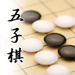
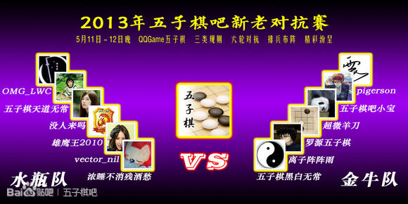

2013年五子棋吧新老对抗赛结束！【金牛队】取胜！
#1 <font color="red">2013年五子棋吧新老对抗赛结束！【金牛队】取胜！</font>作者：屏蔽 发表时间：2013-5-12 22:55:56


第一轮 没人来吗 胜 五子棋吧小宝 【水瓶队】 1:0 【金牛队】
第二轮 浓睡不消残酒愁（队长） 胜 pigerson 【水瓶队】 1.5:0 【金牛队】
第三轮 OMG_LWC 负 罗源五子棋 【水瓶队】 0:1 【金牛队】
第四轮 五子棋天道无常 负 五子棋黑白无常（队长） 【水瓶队】 0:1.5 【金牛队】
第五轮 雄鹰王2010 负 离子阵阵雨 【水瓶队】 0:1 【金牛队】
第六轮 vector_nil 负 超微羊刀 【水瓶队】 0:1 【金牛队】
总比分：【水瓶队】 2.5:4.5 【金牛队】
恭喜【金牛队】获得2013年五子棋吧新老对抗赛优胜！
五子棋黑白无常本次为【金牛队】排兵布阵，采用田忌赛马的策略，功不可没。尤其是首日用罗源取胜OMG，使得次日三战几乎没有压力。另一方面，虽然【水瓶队】首日精锐尽出，次日显得后劲不足，但在战略战术上也不是完全没有机会。如果天道能够顶和黑白的话，最后两盘棋完全可以让vector的一盘采取和棋战术确保胜利。天道失利后，队长浓睡缺席帅位也使得vector失去了一个坚挺的实力和策略支持，最终他也未能帮助【水瓶队】挽回败局。遗憾！从第三轮起【金牛队】打出了漂亮的四连胜，实在厉害！
让我们为优胜的队伍鼓掌！也希望失利的队伍能够再接再厉，发现不足，努力提高自己！
====================
2013年五子棋吧新老对抗赛第一轮 指定开局、三手交换、五手2打、黑棋有禁 QQ游戏五子棋(三手交换,五手两打)1
疏星局（不换），5A=G9，没人来吗（黑）胜五子棋吧小宝（白）
简明的一局。14-14多一个次序，主要还是14-16的位置不好，黑棋交换很舒服。23以下白棋负隅顽抗，无奈实在无从防御。25必胜！
2013年五子棋吧新老对抗赛第二轮 一手交换 QQ游戏一手交换50
1=D3（交换），浓睡不消残酒愁（黑）胜pigerson（白）
8、10之后应该说局面还比较稳定，白棋容易接受。但面对11的做棋，12实在是感觉不佳，13、15手直接必胜了。
2013年五子棋吧新老对抗赛第三轮 指定开局、三手交换、五手N打、黑棋有禁 QQ游戏五子棋(三手交换,五手两打)1
疏星局（交换），5A=/，罗源五子棋（黑）胜OMG_LWC（白）
疏星一打本来很平衡的局面，但12直接搞错了方向！13之后白棋也未能找到什么秒防，遗憾的脆败。
2013年五子棋吧新老对抗赛第四轮 指定开局、三手交换、五手N打、黑棋有禁 QQ游戏五子棋(三手交换,五手两打)1
金星局（不换），5A=F7,I9,I10，五子棋黑白无常（黑）胜五子棋天道无常（白）（Time）
开局阶段黑棋15手包抄的意图还是很明显的，可惜走快了。到白24之后已经不成形状。可惜白棋反而激动了，也没把握好全盘的机会。最后在读秒大战中，实力、经验、意志综合水准更胜一筹的黑白笑到了最后。惊心动魄的一局！天道遗憾！
2013年五子棋吧新老对抗赛第五轮 一手交换 QQ游戏一手交换50
1=H2（不换），雄鹰王2012（黑）负离子阵阵雨（白）
这盘棋也算精彩，但其实可谈的地方不多。黑棋从开局的均衡，被白棋一点一点的扩大优势直至胜利，单纯是“棋力”的差距所致。希望雄鹰王赛后能够好好总结，有所提高。
2013年五子棋吧新老对抗赛第六轮 指定开局、三手交换、五手2打、黑棋有禁 QQ游戏五子棋(三手交换,五手两打)1
疏星局（交换），5A=G9，vector_nil（黑）负超微羊刀（白）
黑棋没有发挥实力的一局。11的策略实在是不好，再加上16防守卡位十分精确，后面几乎就是羊刀在全盘的表演了。收放自如，盘面基础上的进攻或控盘都十分轻松，最后取胜也在意料之中。
［ 五子棋黑白无常 于 2013-5-12 23:07:03 时花20金币送鲜花一朵］
［ 五子棋黑白无常 于 2013-5-12 23:07:03 时花20金币送鲜花一朵］
［ 五子棋黑白无常 于 2013-5-12 23:07:03 时花20金币送鲜花一朵］
［ 五子棋黑白无常 于 2013-5-12 23:07:03 时花20金币送鲜花一朵］
［ 五子棋黑白无常 于 2013-5-12 23:07:03 时花20金币送鲜花一朵］
［ 五子棋黑白无常 于 2013-5-12 23:07:03 时花20金币送鲜花一朵］
［ 五子棋黑白无常 于 2013-5-12 23:07:03 时花20金币送鲜花一朵］
［ 五子棋黑白无常 于 2013-5-12 23:07:03 时花20金币送鲜花一朵］
［ 五子棋黑白无常 于 2013-5-12 23:07:03 时花20金币送鲜花一朵］
［ 五子棋黑白无常 于 2013-5-12 23:07:03 时花20金币送鲜花一朵］
［ 蚩尤血族 于 2013-5-12 23:10:25 时花20金币送鲜花一朵］
［ 蚩尤血族 于 2013-5-12 23:10:25 时花20金币送鲜花一朵］
［ 蚩尤血族 于 2013-5-12 23:10:25 时花20金币送鲜花一朵］
［ 蚩尤血族 于 2013-5-12 23:10:25 时花20金币送鲜花一朵］
［ 蚩尤血族 于 2013-5-12 23:10:25 时花20金币送鲜花一朵］
［ 蚩尤血族 于 2013-5-12 23:10:25 时花20金币送鲜花一朵］
［ 蚩尤血族 于 2013-5-12 23:10:25 时花20金币送鲜花一朵］
［ 蚩尤血族 于 2013-5-12 23:10:25 时花20金币送鲜花一朵］
［ 蚩尤血族 于 2013-5-12 23:10:25 时花20金币送鲜花一朵］
［ 蚩尤血族 于 2013-5-12 23:10:25 时花20金币送鲜花一朵］
［ 釣鱼岛岛主 于 2013-5-12 23:14:52 时花20金币送鲜花一朵］
［ 小红眼镜 于 2013-5-13 0:09:03 时花20金币送鲜花一朵］
［ 小红眼镜 于 2013-5-13 0:09:03 时花20金币送鲜花一朵］
［ 小红眼镜 于 2013-5-13 0:09:03 时花20金币送鲜花一朵］
［ 小红眼镜 于 2013-5-13 0:09:03 时花20金币送鲜花一朵］
［ 小红眼镜 于 2013-5-13 0:09:03 时花20金币送鲜花一朵］
［ 超级天逸超人 于 2013-5-13 20:09:30 时花20金币送鲜花一朵］
［ 超级天逸超人 于 2013-5-13 20:09:30 时花20金币送鲜花一朵］
［ 超级天逸超人 于 2013-5-13 20:09:30 时花20金币送鲜花一朵］
［ 超级天逸超人 于 2013-5-13 20:09:30 时花20金币送鲜花一朵］
［ 超级天逸超人 于 2013-5-13 20:09:30 时花20金币送鲜花一朵］
#2 Re:2013年五子棋吧新老对抗赛结束！【金牛队】取胜！作者：赛佐为 发表时间：2013-5-12 23:15:00
我大水瓶。。。。恭喜金牛队~~~~［ 小红眼镜 于 2013-5-13 0:09:59 时花20金币送鲜花一朵］
#3 Re:2013年五子棋吧新老对抗赛结束！【金牛队】取胜！作者：五子棋黑白无常 发表时间：2013-5-12 23:15:10
我眼一花冲动了。。。没细想个所以然就撸出去了。。。
［ 小红眼镜 于 2013-5-13 0:10:17 时花20金币送鲜花一朵］
#4 Re:2013年五子棋吧新老对抗赛结束！【金牛队】取胜！作者：蟠龙眼 发表时间：2013-5-13 13:07:56
我擦，居然用田鸡赛马的卑鄙手段